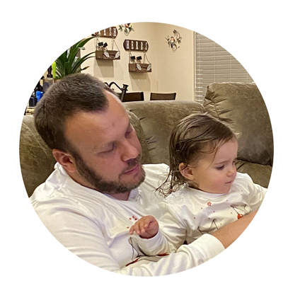

|  |
Michael Henderson
Registered Nurse, MSN, RN
External Peer Review Coordinator
Department of Veterans Affairs
Loma Linda, CA
I am a registered nurse with the Department of Veterans Affairs. I obtained my BSN from California State University, San Bernardino
in 2015, where I graduated Suma Cum Laude. Shortly after, I sat for the NCLEX and passed on the first attempt, earning my California
State Nursing License. Soon after, I began work at the Loma Linda VA Medical Center as Med/Surg Nurse on 3SE. I quickly rose through
the ranks becoming certified in SDU and next, a Charge Nurse. It wasn't long before I became the Assistant Nurse Manager of the unit.
Next, I attended Grand Canyon Univeristy where I earned my MSN in Leadership in Healthcare Administration with and Emphasis in Servant
Leadership. During the COVID-19 Pandemic I was hand selected to establish our facilities deployment plan for the COVID-19 vaccine.
Currently, I am working on switching careers to become a developer.
|